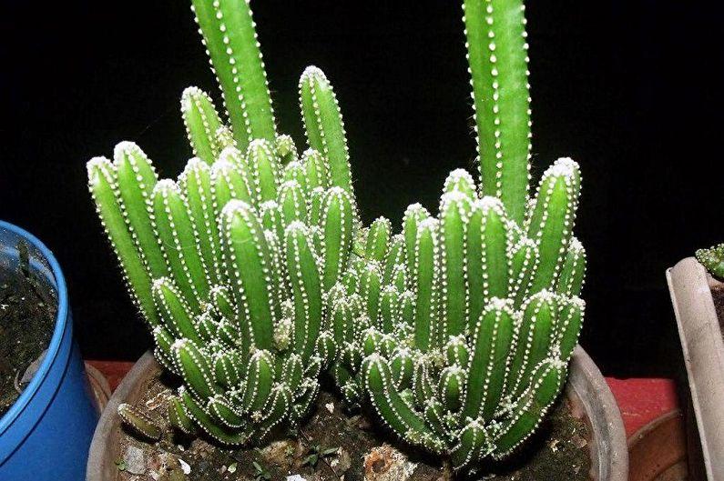
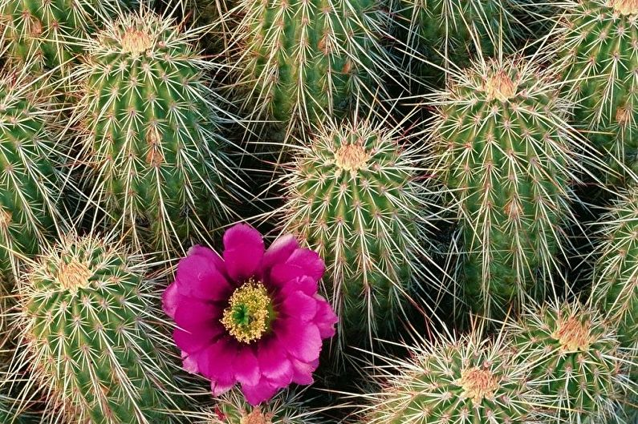
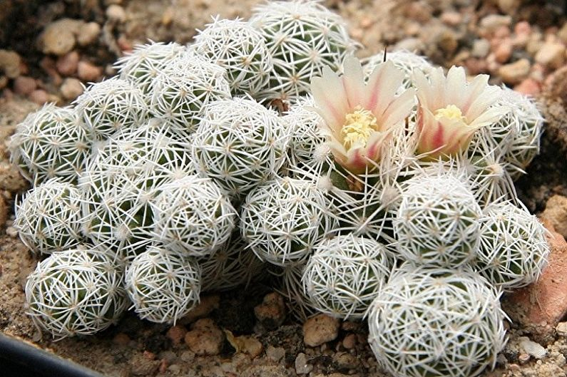
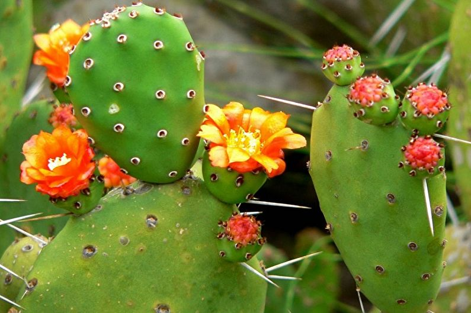
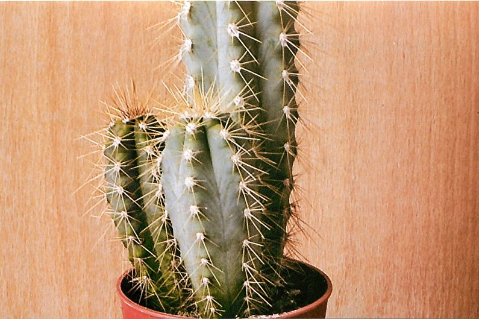
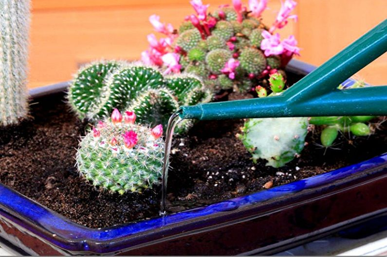

Еще один классический домашний кактус. Он очень востребован в оформлении и интерьерном дизайне. Со временем может дорастать до метра, но на это уйдет далеко не один год.
Цена: 1500p
Это гребенчатый кактус, который напоминает невысокую шипастую колонну. Средняя высота домашних сортов – 20–30 см. Особенности цветения зависят от конкретного подвида.
Цена: 2000p
Красивый декоративный серебристый сорт цветет белыми цветками, которые кольцом обхватывают весь стебель. Форма кактуса – округлая.
Цена: 1000p
Ярковыраженный представитель одноименного рода. Средняя высота – 20–30 см, но форма и размер зависят от конкретного вида. Это одно из самых обширных и разнообразных семейств. Красные или белые колючки – необычной крючковатой формы.
Цена: 3000p
Взрослое растение – высокая метровая колонна, которая с возрастом становится не только выше, но и шире. Некоторые сорта достигают 1,5 м и выше.
Цена: 1550p
Поддерживайте в помещении умеренную температуру. Зимний минимум – около +13C. Хотя большинство сортов легко переносит краткосрочные заморозки, не нужно этим злоупотреблять. Максимальную температуру до +35C домашние кактусы переносят без проблем.
Весной схема полива стандартная – по мере высыхания верхнего слоя почвы. Берите теплую отстоянную воду без примесей. Как только начинает холодать, постепенно сокращайте полив. Осенью и зимой смело оставляйте грунт почти сухим. Количество воды в это время – минимальное, чтобы не пересыхал корень, а растение не сморщилось.
Адрес: Московская обл. г.Королёв
Номер телефона: 7-999-999-99-99